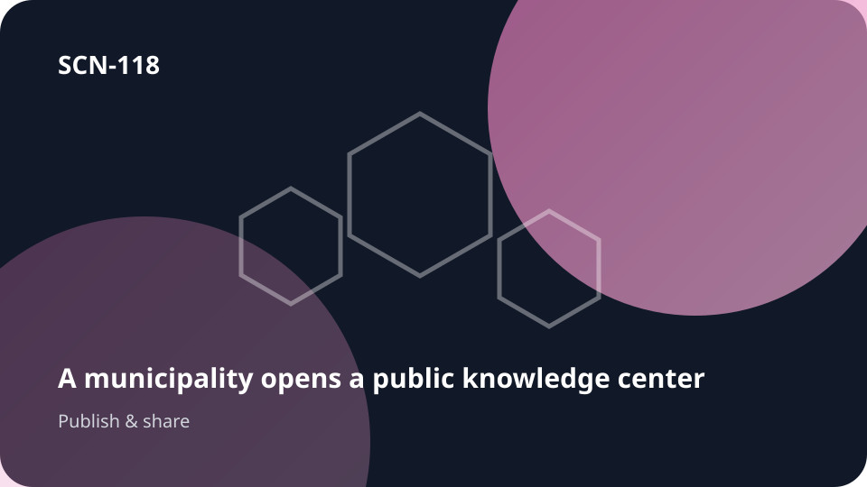

Part deUn savoir qui doit rejoindre un public

SCN-118 · Diffuser et rejoindre le public
Relier les objets d’une ville dans un graphe sémantique multivue
Koali relie ces objets dans un graphe de sens où les termes administratifs, historiques et publics peuvent coexister avec leurs définitions et provenances; plusieurs vues deviennent possibles sans réduire la ville à un vocabulaire unique. L’objectif de continuité est de présenter une base de connaissances sous forme de cours, vidéos, contenus audio, guides, bibliothèques ou canaux.
ExempleUne municipalité construit un « Wikipédia de la ville » relié à ses décisions réelles
TrouverComprendreApprendreCollaborerChoisirAgirRépondreSe souvenir
← Retour à la mosaïque complèteMécanisme Koali
Présenter une base de connaissances sous forme de cours, vidéos, contenus audio, guides, bibliothèques ou canaux.
Chemin système
UCKKSemantiKKonnaxion → Kreative → Konservation
Comment ça circule
objet local → connaissances → décisions → médias → questions → participation
Aussi utile pourvilles · transparence · patrimoine